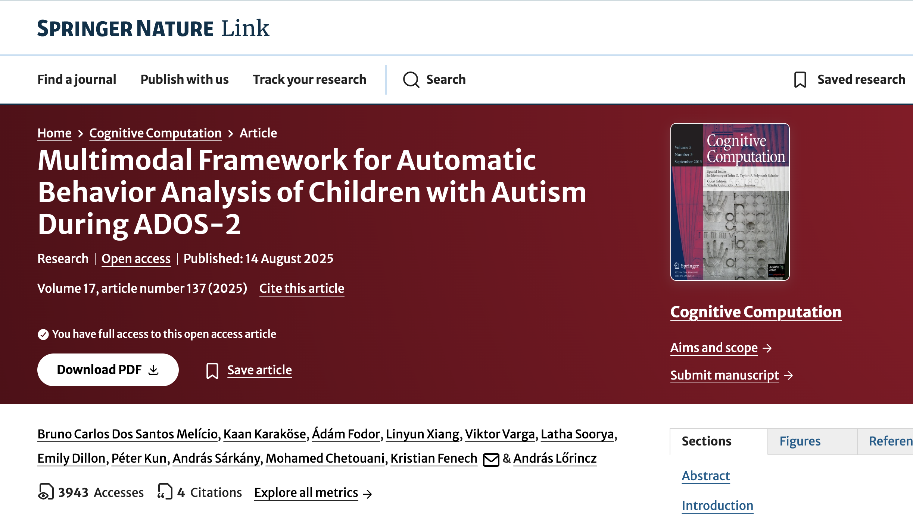
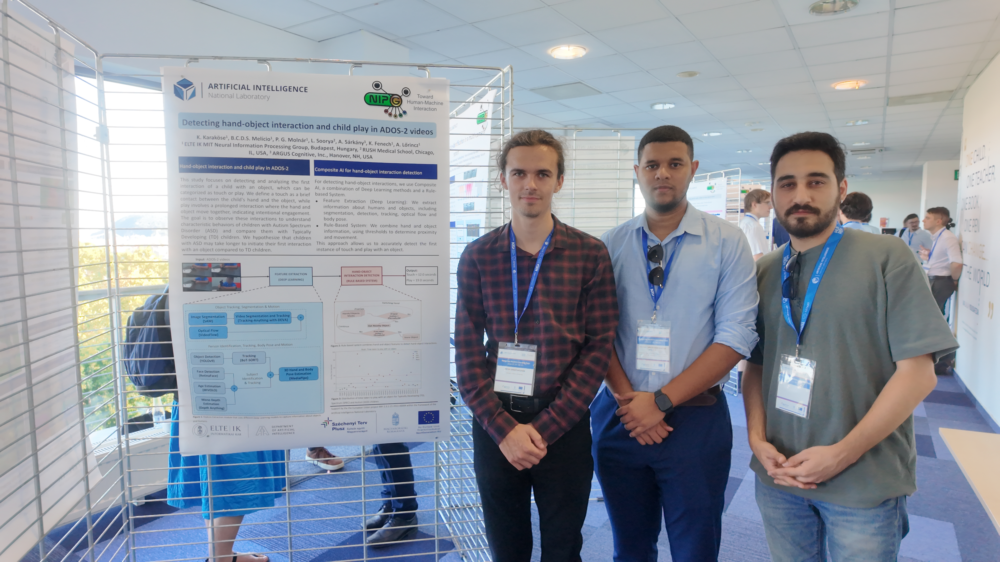
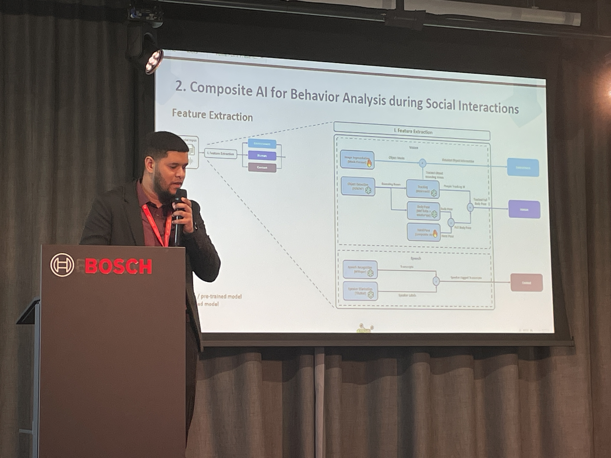

Featured
Multimodal Framework for Automatic Behavior Analysis of Children with Autism During ADOS-2
Cognitive Computation
View paperBruno Melício
Multimodal AI for Social Robotics and Autism.
Postdoctoral Researcher at ISIR, Sorbonne Université .


Cognitive Computation
View paper
INSAR Annual Meeting
View paper
ACM ICMI
View paper